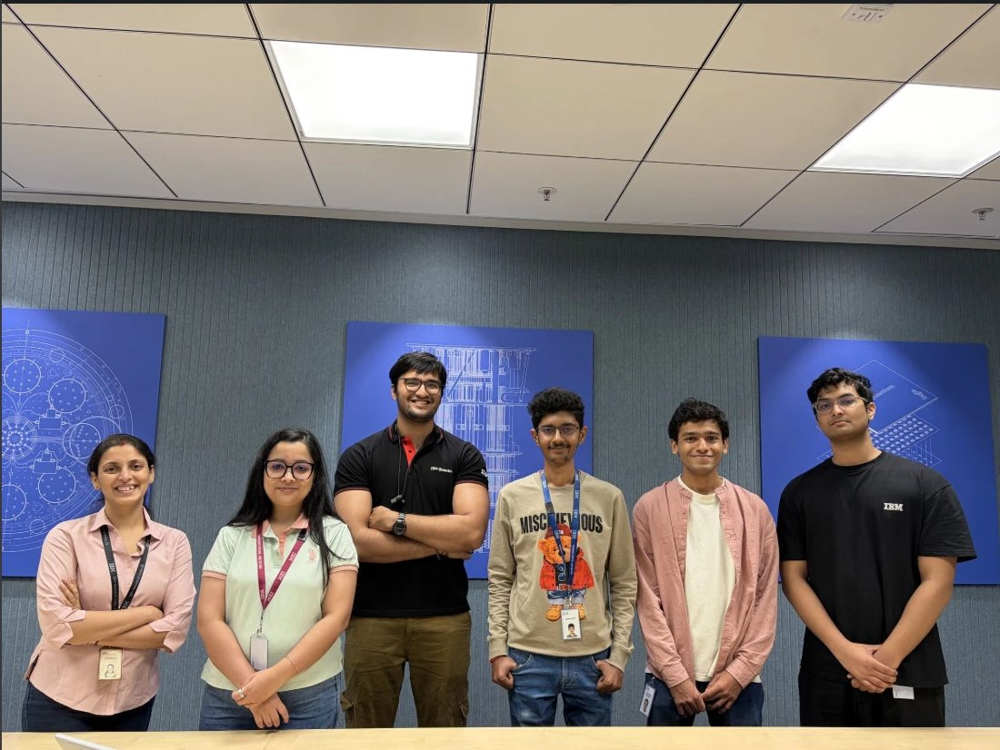

I am a research engineer working on efficient inference for large language models.
I currently work at Conscious Engines, on draft-and-verify decoding for diffusion mixture-of-experts models.
In summer 2026 I was a research intern in the AI for Quantum group at IBM Research India with Anupama Ray, where my work on sign-hedged beam QAOA received the Best Paper Award at the internship symposium.
I also work with Soumen Basu (Meta) and Manoj Kumar (IIT Roorkee) on uncertainty-aware self-supervised learning for medical images and on graph models of brain networks.
I am a final-year undergraduate in Electronics and Communication Engineering at IIT (ISM) Dhanbad, graduating in 2027.
News
| 2026 Aug | Joined Conscious Engines as a research engineer intern. |
| 2026 Aug | Sign-hedged Beam QAOA received the Best Paper Award at the IBM Research Internship Symposium 2026. |
| 2026 | PACL submitted to WACV 2027 (first author); BrainRMA submitted to AAAI 2027 (second author). |
| 2026 | Our entity-resolution system placed 5th of 80,000 teams at AMLC 2026. |
| 2026 May | Started as a research intern at IBM Research India, AI for Quantum. |
| 2025 Jun | Began research with Soumen Basu and Manoj Kumar on medical-imaging representation learning. |
Papers

Arush Sharma, Soumen Basu, Manoj Kumar.
Under review at WACV 2027.
Predicts a Gaussian latent per patch instead of a point embedding and carries the uncertainty into classification and segmentation. 0.987 AUROC on chest X-ray, 0.938 on BUSI, 0.604 IoU.

Second author, with Soumen Basu and Manoj Kumar.
Under review at AAAI 2027.
Keeps ROI tokens while fusing global attention with reliability-weighted ROI-to-cluster context. 82.35% on ABIDE and 93.75% on OSF.

Arush Sharma, Anupama Ray.
In preparation. Best Paper Award, IBM Research Internship Symposium 2026.
Pairs a CliffSearch-evolved power-law schedule with width-B sign hedging so recursive QAOA avoids irreversible correlator-sign errors; approximation ratio 1.000 on IBM Marrakesh for SK (n=20), 0.984 on MaxCut (n=60).
Experience
| 2026 Aug – now | Conscious Engines (Stackr Labs, backed by a16z), research engineer intern. Draft-aligned decoding for SDAR-30B-A3B: a 1.7B drafter pre-fills each 32-token block and a self-distilled LoRA judge commits or re-masks each token, cutting MoE passes per block from 12.8 to 7.6 at comparable accuracy. Scaling FLARE-2B training to 9.66B tokens on 8×H200. |
| 2026 May – Aug | IBM Research India, research intern, AI for Quantum, with Anupama Ray. A multi-agent algorithm-discovery loop that proposes, mutates and evaluates analytic QAOA schedules; sign-hedged beam RQAOA evaluated on simulators, MPS and IBM hardware. |
| 2025 Jun – now | IIT (ISM) Dhanbad, research intern with Soumen Basu (Meta) and Manoj Kumar (IIT Roorkee). Medical-imaging self-supervised learning and brain-network models. |
| 2025 Jun – Nov | Aeroqube, agentic AI intern. Fine-tuned MedGemma 4B for a medical-tourism assistant and deployed a Dockerised AWS pipeline with retrieval and LangSmith evaluation. |
Projects
- PriorityKV: structure-aware KV-cache eviction for long agent traces. Protects system, tool-schema, constraint, sink and recent tokens; retained task state in 112/120 cases versus 1/120 for position-blind eviction on Qwen3-8B and Llama-3.1-8B. (code)
- Business entity resolution, AMLC 2026: a cost-tiered matching cascade over 1.7M entities, from a fine-tuned multilingual-e5 blocker through cross-encoders and LightGBM to an ensemble of Qwen3.5-4B LoRA judges. Rank 5 of 80,000 teams. (code)
- AlignmentLab: matched-compute comparison of SFT, DPO and GRPO/RLVR on Qwen3-8B and 14B. (code)
- Hindi TinyStories GPT: a 33M-parameter decoder-only transformer written from scratch in PyTorch and trained on 100M tokens of Hindi children’s stories. (code)
- ReVival, Amazon HackOn Season 6: a seven-agent pipeline on AWS Bedrock that grades returned products from photos and routes them back to market. (code) (demo)
- Arista Intelligent RRM, Inter IIT Tech Meet 14.0: radio-resource management with a GNN state encoder and offline conservative Q-learning on Linux virtual APs. 12th of 23 IITs. (code)
- AtomMail: an OCR-grounded email assistant that drafts replies in the user’s tone. 2nd prize, Hackfest. (code)
Awards
| 2026 | Best Paper Award, IBM Research Internship Symposium. |
| 2026 | Rank 5 of 80,000 teams, AMLC 2026. |
| 2nd prize, Hackfest, for AtomMail. | |
| Selected for Amazon ML Summer School (top 3,000 of 134,000 applicants). | |
| 2023 | All-India Rank 5181, JEE Advanced (top 0.47% of 1.11 million). |
Photos

